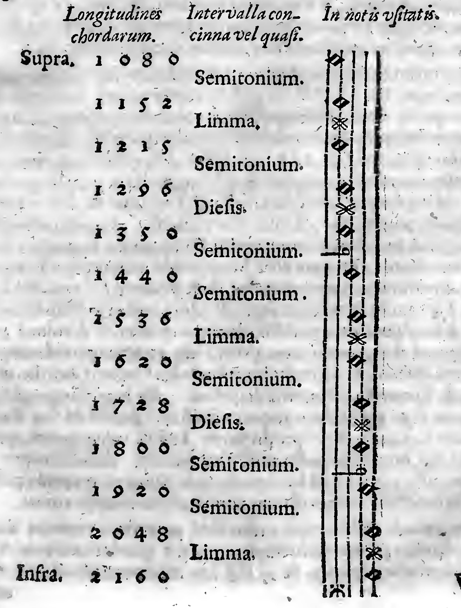

Chapter VIII: Thirteen Minimum Steps of the Chromatic-Enharmonic Octave¶
Chapter VIII.
On the number and order of the smallest intervals of one octave.
- The lowest and highest intervals, as well as the fourth—this one by nature, those in imitation of nature—have been made major tones; from which again, in imitation of nature, which cuts the minor tone into a semitone and a diesis, semitones 15:16 are likewise cut off for the sake of greater variety, especially in the turns or windings of song, and that in the upper part of the interval:
there remain therefore in the lower part Limmata, or major dieses 128:135, which exceeds the diesis 24:25 by one comma.
- But the chief necessity of this cutting off lies in the highest interval, which in the preceding chapter we made a major tone, because hard song uses at the top either the semitone or the major tone promiscuously and as occasion arises, yet more frequently the former and almost customarily,
for the reason that just as the ordinary seventh makes an epitrite or fourth 3:4 with the fourth (namely 405 with 540 of the previous chapter), so too this extraordinary VII loves to make a perfect fifth, or 2:3, with III, because III is proper to the hard genus, namely 576, so that the song may thus become sharper. And indeed 2:3 of 576 is 384, which with VIII, namely with 360, makes 16:15.
Take this example in notes by anticipation. Though I would not contend if someone affirmed that the character of this melody is more rightly expressed thus. [Musical example in notes] But of this matter below at length.
Thus there arise in one octave altogether thirteen strings, in these least numbers or terms, between which I have set all the smallest intervals according to their natural order in a full and perfect organ system.


- You see in two places a pair of semitones coming together below the diesis, which I said above would happen. And instrument makers seize upon this in organs, using two semitones in place of a tone whenever they introduce some rather unfamiliar shift.
Although by a rule of their craft they temper all intervals so that none is left pure, yet they relieve and soften the imperfection of the rest with the least loss of perfection in those intervals which ought to be perfect; by which means it comes about that all tones for organists are equal, the limma also equal to the semitone, and so two semitones make a tone for them by a perfect bisection; and so that this may succeed the more easily, not even the diesis retains its demonstrative perfection among them.
Marginal note: Lack of science among organists [Organistarum Atechnia].
An expeditious division of the monochord for the lute, and its refutation by the sense of hearing.
This place demands that I fulfill what I promised above near the end of the second chapter: namely, that I compare with my own discoveries the lute-style division of the monochord put forward by Vincenzo Galilei (if I am not mistaken, from Aristoxenus), and question the ears upon it as well—yet in such a way that Reason may speak out what it will be fitting for the ears themselves to say.
For since the octave consists of seven melodic intervals—whence it takes the name OCTAVE, as was said in the previous chapter—among which intervals there are five tones and two semitones; and any of the tones can be bisected into parts closest to a semitone, so that thus are made the twelve intervals defined in this chapter, with the letters $G, Ge, A, b, h, c, ce, d, de, e, f, fe, g$: taking occasion from this, instrumental Musicians also set up twelve intervals in one Octave, yet by a way in no wise laborious, but altogether easy and expeditious, as most mechanical things ought to be; which is as follows. They divide the entire length of the lute’s neck—between the two Bridges or nuts, upon which the string resting obtains free vibration over the whole intercepted length—into $18$ equal parts, and place the first fret or Stop from the Pegs so that $1$ part lies above and $17$ below. Then, erasing the points of division, they divide these remaining $17$ anew into another $18$, and with a second fret cut off one as before, and repeat this twelve times: with the twelfth cutting-off, they say so much of the String is left that between it and the Whole there is the Consonance of an octave. Let the string’s length therefore be $100000$. If $18$ parts make $100000$, what is $17$? It yields $94444$. Again, if $18$ equal $94444$, what is $17$? It yields $89198$. And if $18$ equal $89198$, what is $17$? It yields $84242$, etc. In this way twelve numbers come forth for as many intervals, beside which are placed the Numbers required by the true ratio demonstrated hitherto, in the whole string’s quantity.
If this ratio were exact, then indeed the ratio repeated twelve times would equal the double ratio between $1$ and $2$, which good Arithmeticians know to be false, since $1:2$ and $17:18$ are incommensurable. Yet
f. 0139 · p. 49this mechanical division of the string satisfies hearing after a fashion, because each number approaches the true one placed beside it, and because lute strings are tensile, and of a somewhat varying sound—higher at the start, while their motion is still large, freshly released from the finger; lower and slacker as the breadth of vibration narrows while the string returns into itself. Moreover there is a difference in a gentler or stronger touch, and in a wider or more restrained pluck, according to the Musician’s skill.
Note |
Galilei’s Ratio |
True ratio demonstrated hitherto |
|---|---|---|
100000 |
100000 |
|
Ge. |
94444 |
93750 |
89198 |
88889 |
|
84242 |
83333 |
|
39562 [79562] |
80000 |
|
75242 |
75000 |
|
ce. |
70967 |
71111 |
67025 |
66667 |
|
de. |
63301 |
62500 |
59785 |
60000 |
|
56463 |
56250 |
|
fe. |
53325 |
53333 |
50363 |
50000 |
The same form of numbers expressed.
Yet if you examine the judgment of hearing with the subtle inquiry of Reason, disagreement will appear at once; which I prove thus. The ears indeed recognize a harmony between $100000$ and $50363$, as the Mechanic affirms; they also recognize the same between $100000$ and $50000$, as I affirm. It is asked whether the ears notice no difference, and whether this harmony admits such latitude? I answer from my harmonic divisions in Chapter II that it does not. For just as they discern nothing between the two Consonances of strings $100000:50000$ and $100000:50363$, in the same way neither will they discern between the two Consonances of strings $100000:50000$ and $100000:49637$, because here and there the difference of the two consonances is equal.
Yet if this or that part is struck not beside the whole $100000$, but the parts themselves—here $50363$, there $49637$—are struck next to each other, then it is altogether necessary that the shorter part emit a higher sound and the longer part a lower one; and this difference of sounds is easily detected by the ears in testing unison parts. It is clear, therefore, that the ears judge the consonance between $50363:100000$ and $49637:100000$ to be the same for no other reason than insofar as $50363$ and $49637$ seem equal—that is, insofar as neither differs sensibly from $50000$. Therefore, if the ears answer Reason’s questions, they will say exact Harmony lies between $100000$ and $50000$, or $2:1$; hence exact Consonance between $100000$ and $50363$ is false.
The same judgment holds for the Harmony between $100000$ and $67025$: for though at first the ears do not distinguish it from $66667$, the just length of the truly consonant Part, yet its remainder $32975$ is not half of $67025$. Otherwise therefore will its double $65950$ accord, otherwise $67025$ itself, since these strings compared together make a different sound. Therefore, that the ears do not distinguish them in Harmony happens because they approve the middle number, if sense be sharpened by reason—namely $66667$, so that its complement is $33333$, namely its exact half.
With the sharpness of sense now established in judging the Harmony of $2$ to $3$,
f. 0140 · p. 47bisand likewise $1$ to $3$, it follows that we judge similarly of $2$ and $3$ with $5$, and of $1$ and $3$ with $4$. For if $59785$ accorded with $100000$, and so also the remainder $40215$, surely this is not two-thirds of that, whereas the perfect Consonance of the Bessis ($2:3$) has already been justified, namely $60000$ with $40000$. In this manner hearing, if sharpened by reason, is carried across from one division to another, beginning from the unison, whose recognition and judgment is easiest, until it passes through all, approving the parts which my numbers mark and rejecting the Mechanical ones of the first order.
See another most ingenious temperament of this kind in Vincenzo Galilei, made not from ignorance of demonstrative sound-quantity, but by singular study. I indeed acknowledge its Mechanical use, so we may use organs with nearly the human voice’s freedom of tuning; yet for speculation—nay, for discerning the Nature of song—I judge it pernicious, causing an Organ never truly to attain the native purity of human singing.